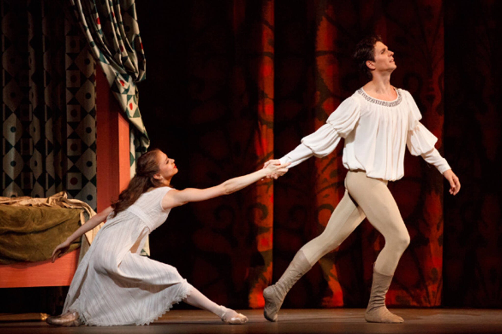

Romeu e Julieta
Ato I Cena 1: No mercado de Verona. Romeu, filho dos Montéquio, tenta sem sucesso declarar seu amor a Rosalina e é consolado por seus amigos Mercúcio e Benvólio. As pessoas começam a se encontrar no mercado, e uma discussão ocorre entre Teobaldo, sobrinho dos Capuleto, e Romeu e seus amigos. Os Capuleto e os Montéquio são inimigos eternos, e por isso, logo se inicia uma briga. Os Montéquio e os Capuleto lutam entre si, até que são interrompidos pela chegada do Príncipe de Verona, que tenta dar fim à hostilidade existente entre as duas famílias. Cena 2: A sala de Julieta na casa dos Capuleto. Julieta, brincando com sua ama, é interrompida por seus pais. Eles a apresentam a Paris, um rico e jovem nobre que pediu sua mão em casamento. Cena 3: Fora da casa dos Capuleto. Os convidados chegam para o baile oferecido pela família. Romeu, Mercúrio e Benvólio se disfarçam com máscaras e decidem ir em busca de Rosalina. Cena 4: O salão de bailes. Romeu e seus amigos chegam no clímax da festa. Os convidados vêem Julieta dançando; Mercúrio, vendo que Romeu está hipnotizado por ela, decide distrair sua atenção. Teobaldo reconhece Romeu e ordena que deixe o salão, mas um Capuleto intervém e o acolhe como convidado em sua casa. Cena 5: Fora da casa dos Capuleto. Enquanto os convidados deixam o salão, o Capuleto reprime Teobaldo por perseguir Romeu. Cena 6: O balcão de Julieta. Sem conseguir dormir, Julieta fica em seu balcão pensando em Romeu, quando ele de repente aparece no jardim. Eles então confessam o amor que sentem um pelo outro.
Ato II Cena 1: O mercado de Verona. Romeu só consegue pensar em Julieta e, vendo um cortejo de casamento passar, ele sonha no dia em que vai desposá-la. Enquanto isso, a ama de Julieta se espreme no meio da multidão para entregar uma carta para Romeu. Ele lê e recebe o "sim" de Julieta para o casamento. Cena 2: A capela. Os amantes se casam secretamente com Frei Lourenço, que espera que assim se acabe a intriga entre os Motéquio e os Capuleto. Cena 3: O mercado de Verona. Interrompendo a farra, Teobaldo luta com Mercúrio e o mata. Romeu vinga-se da morte de seu amigo e é exilado.
Ato III Cena 1: O quarto. Na aurora de um novo dia, a agitação na casa dos Capuleto é muita, e Romeu deve ir embora. Ele abraça Julieta e parte no momento em que os pais de Julieta aparecem com Paris. Julieta recusa-se a casar com ele, e, magoado com sua recusa, ele a deixa. Os pais de Julieta se aborrecem e ameaçam deserdar a filha. Julieta vai ao encontro de Frei Lourenço. Cena 2: A capela. Julieta cai nos pés do frei e implora por sua ajuda. Ele lhe dá um frasco com uma poção que a fará dormir, de maneira que todos pensem que é morta. Seus pais, acreditando estar ela realmente moribunda, irão enterrá-la no mausoléu da família. Enquanto isso Romeu, avisado pelo Frei Lourenço, irá voltar à noite para buscá-la e juntos fugirem de Verona. Cena 3: O quarto. Esta noite, Julieta aceita que Paris a despose, mas na manhã seguinte, quando seus pais chegam com Paris, percebem que ela está morta. Cena 4: . O mausoléu dos Capuleto. Romeu, não avisado pela mensagem do Frei, volta à Verona atordoado com a notícia da morte de sua amada. Disfarçado como um monge, ele entra no mausoléu e, vendo Paris sobre o corpo de Julieta, o mata. Acreditando que ela está morta, Romeu se envenena. Julieta acorda, e vendo seu Romeu sem vida, se suicida também com um punhal, pois não pode viver sem seu grande amor.